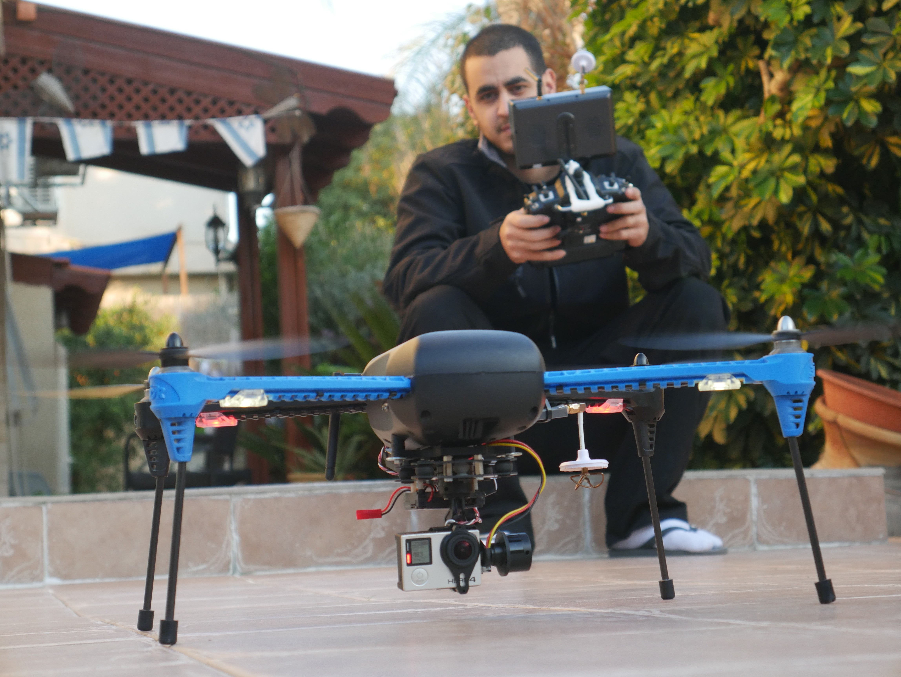
QA
Hi, I’m Shay Cohen, 35 years old, married, and a father of two. I live in Ashdod, Israel, and have been working as a warehouse operator since 2011.
While my job has given me stability, I’ve always had a deep love for technology. As a kid, I enjoyed building websites with PHP and JavaScript, and at 25, I pursued studies in iOS and Android development. I even launched a game on the App Store, but life led me in a different direction.
Now, at 35, I’m making a bold move - I’m transitioning into a career as a QA Engineer. Learning manual and automation testing is my way of improving my future, not just for me but for my family. It’s an exciting challenge, and I’m determined to succeed.
One of my biggest passions is drones - not just flying them, but building them from scratch. There’s something incredible about assembling the parts, programming the flight controller, and then watching it take off. I enjoy capturing breathtaking aerial footage and experimenting with FPV (First Person View) racing.
Here’s a glimpse of my hobby:
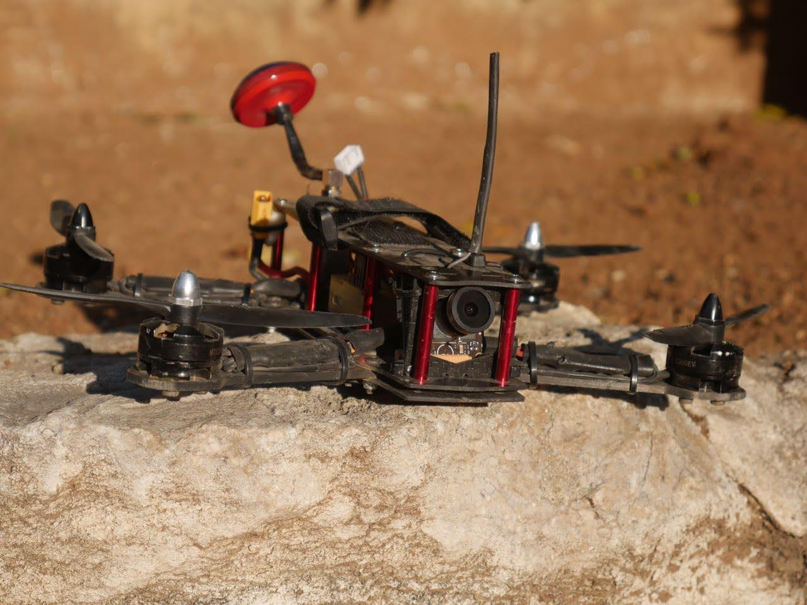
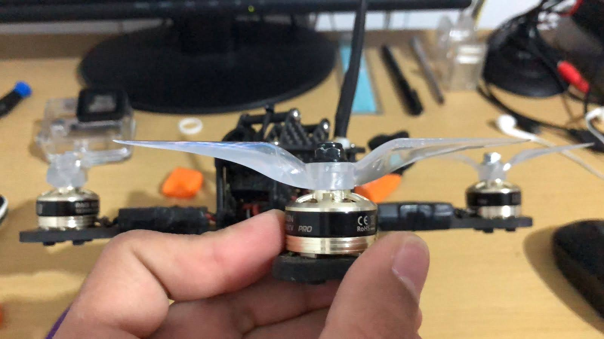
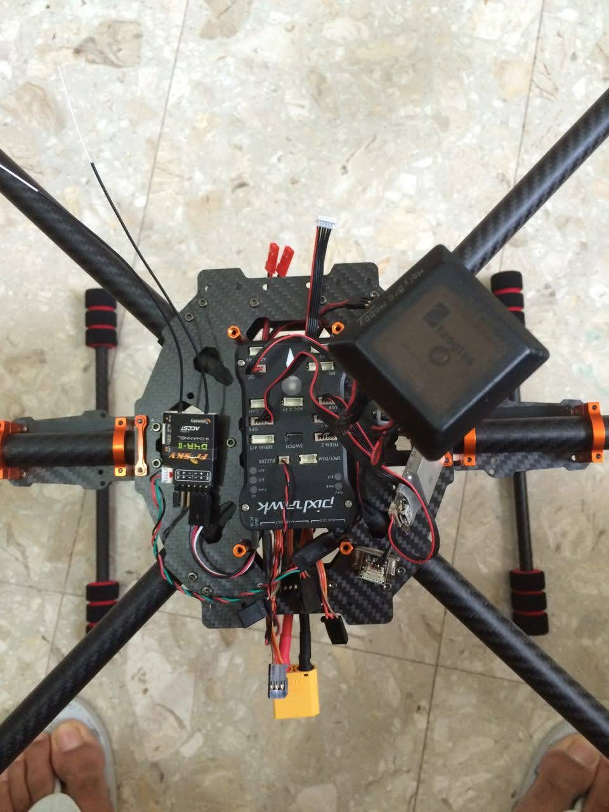
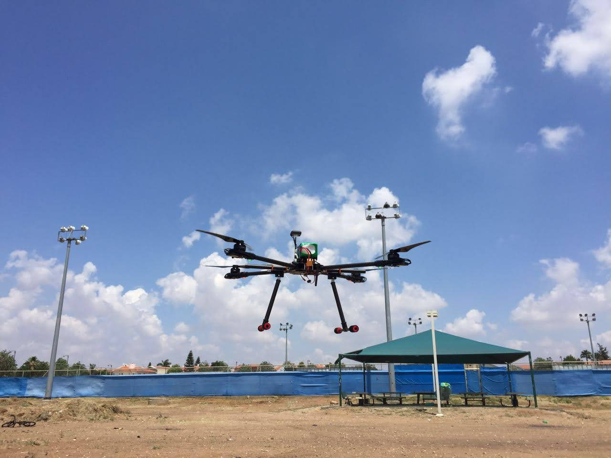
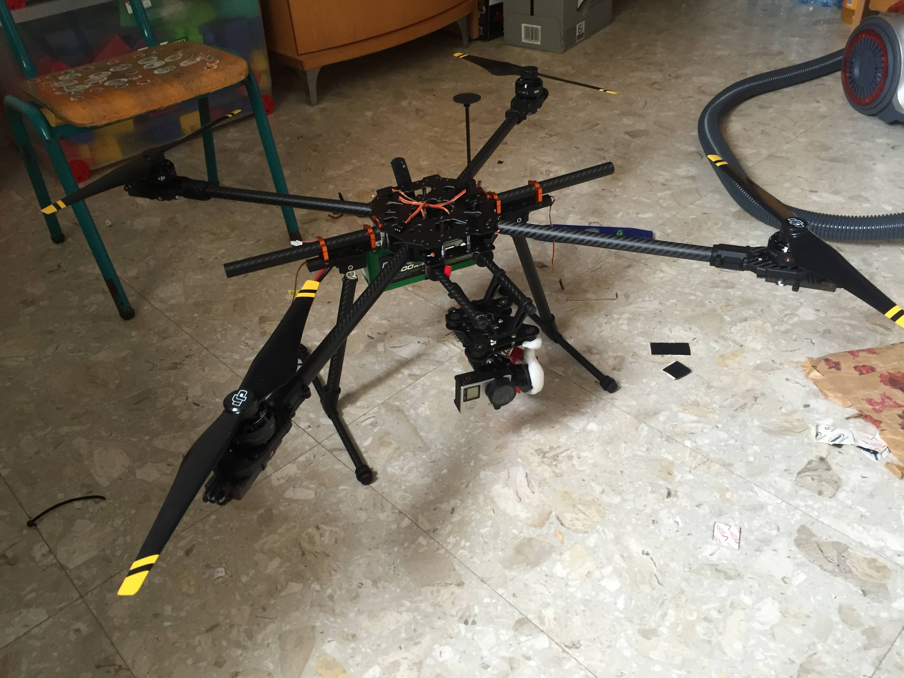
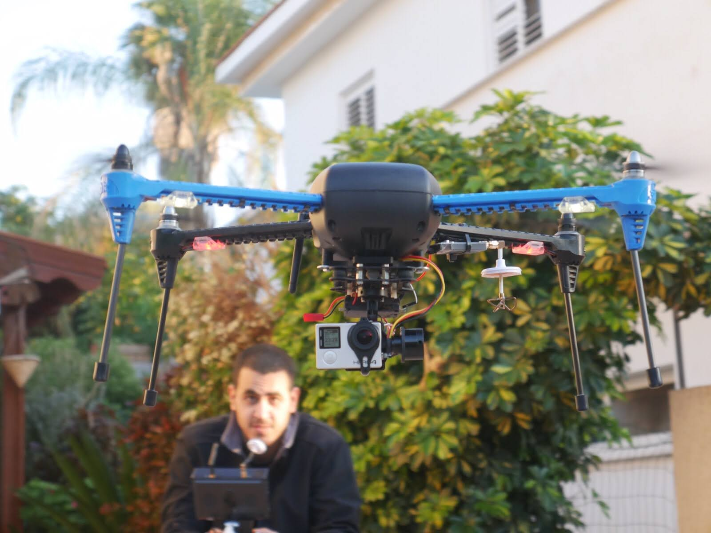
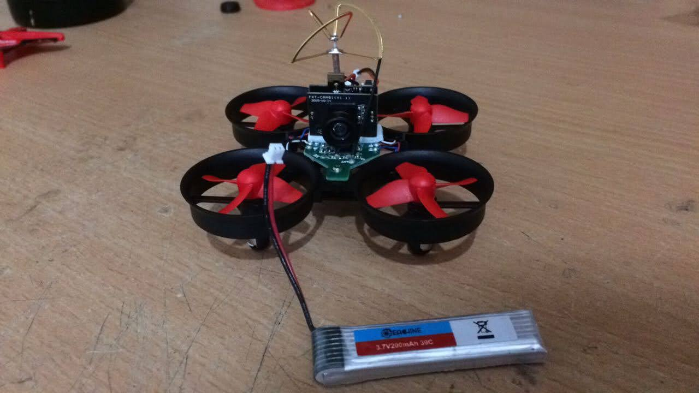
Thailand was one of the most unforgettable trips I’ve ever taken. The combination of bustling streets of Bangkok to the serene rice paddies in the north and the dreamy beaches in the south, made it a dream destination.
Bangkok – The City That Never Sleeps
Bangkok was my first stop. The Grand Palace was breathtaking, and the floating markets were a unique experience. At night, the Khao San Road was buzzing with energy - full of music, street performances, and endless food stalls.
Chiang Mai – The Cultural Heart
In Chiang Mai, I explored ancient temples, visited ancient villages, went on a jeep tour through breathtaking landscapes saw elephants and dive into the bustling Chiang Mai Night Bazaar.
The Islands – Paradise on Earth
Thailand’s islands are like something out of a postcard. I visited Phuket, Ko Samui, Ko Phangan, and Koh Phi Phi, where I enjoyed snorkeling, boat trips, and breathtaking sunsets. The beaches were amazing, the water was crystal-clear, and the island life was pure relaxation.
Would love to go back one day!
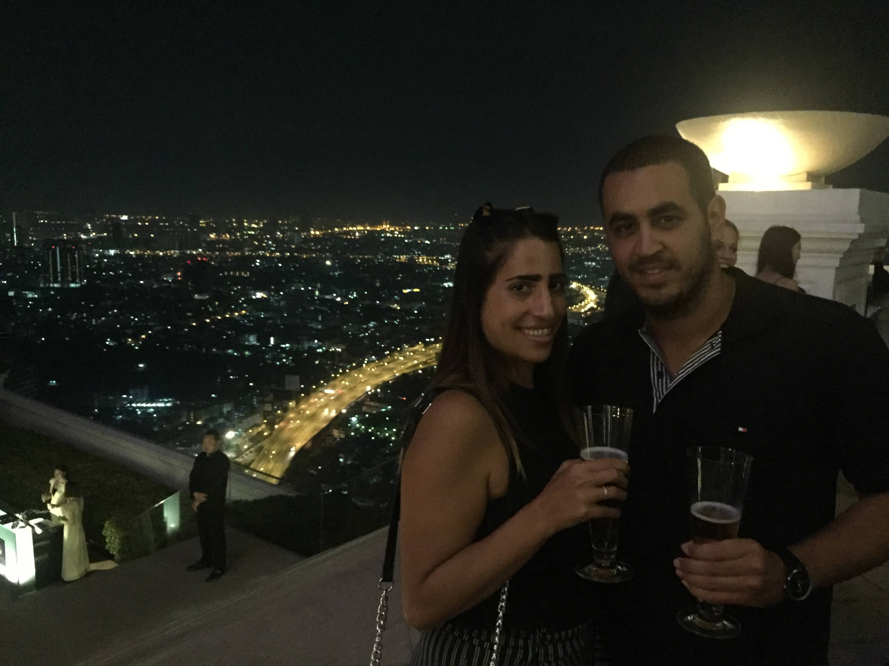
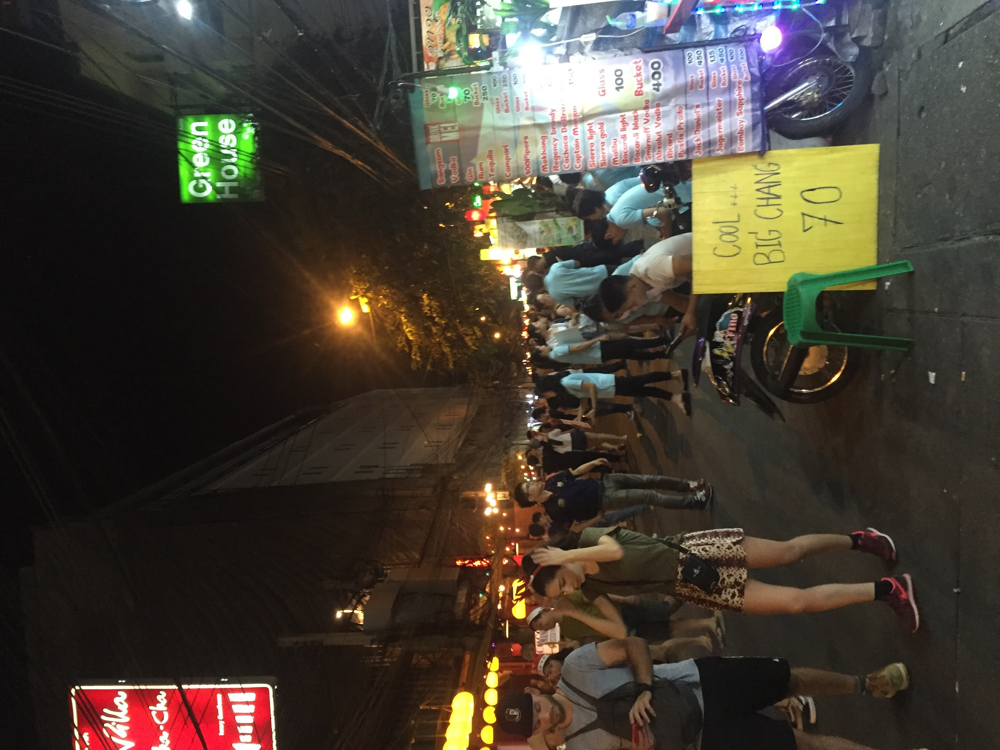
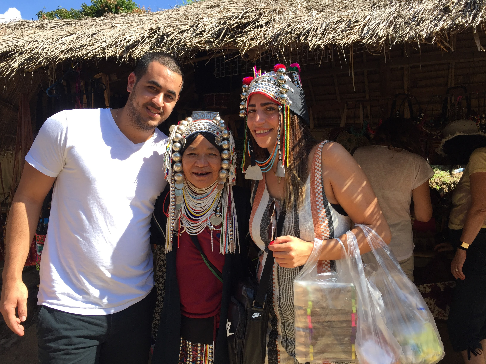
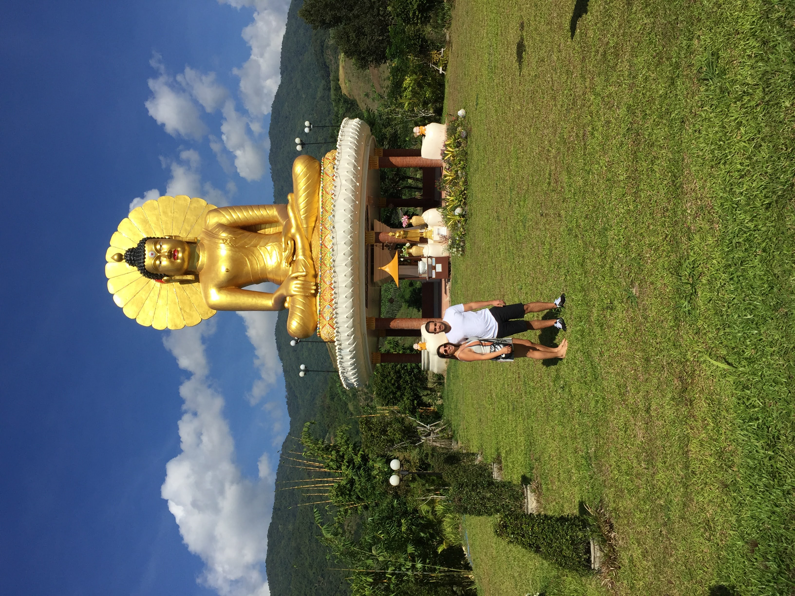
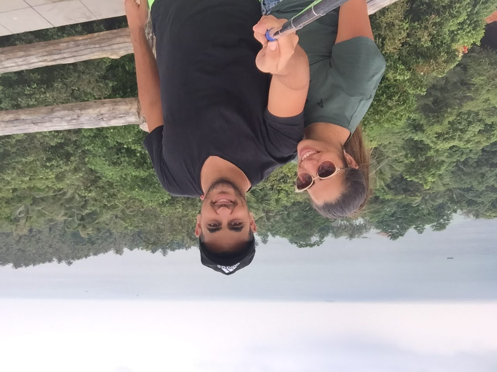
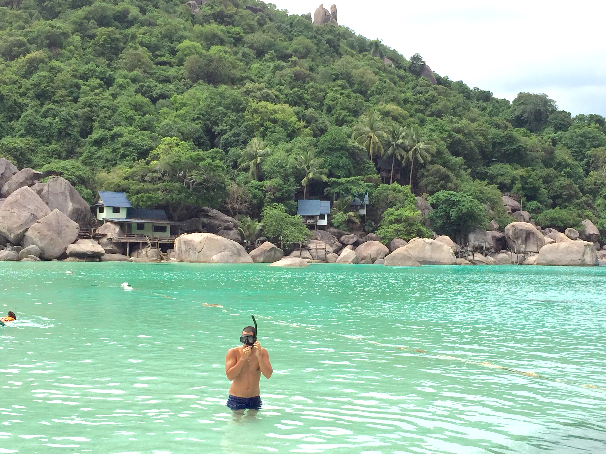